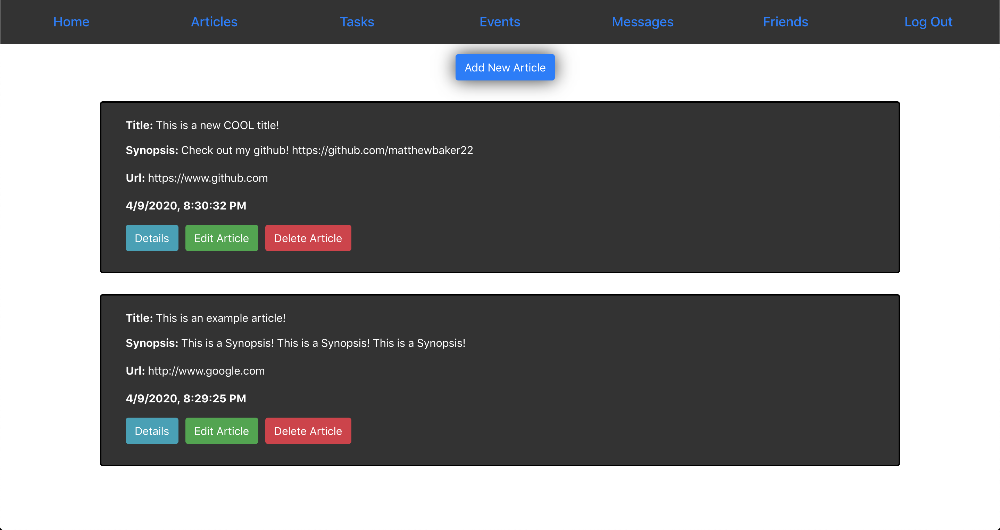
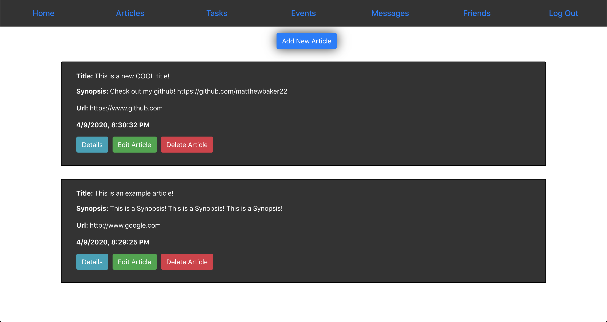

Matthew Baker
Full Stack Web Developer.
About
I’m a software developer, but that’s not all I am. I’m a problem solver, and I am excited to have found a career to utilize this skill daily. I stumbled across software development while reaching careers that would give me the opportunity to continuously learn and grow. I enjoy working in teams and interacting with all parts of a company to fully understand the business and products that I will be working on. The Nashville Tech community welcoming and caring, an environment that I have always looked forward to being a part of. I am eager to contribute to the tech community in a positive way, and jumpstart my career as a software developer.
My Skills
Front End Developement
My front end skills consist of JavaScript, HTML5, and CSS. Within JavaScript, I began using the React library. I've built multiple apps with vanilla JavaScript and also with React.
I have also used other technologies such as ReactStrap, Cloudinary, and Firebase.
Back End Developement
Team Members
Solo Projects Done
Team Projects Done


 
